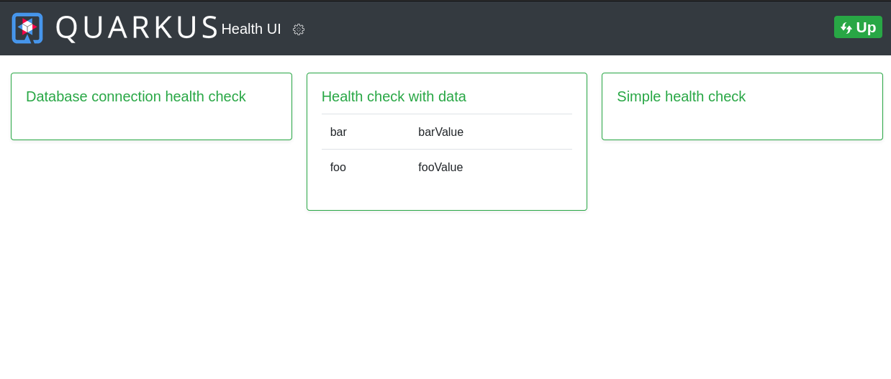

Quarkus - MicroProfile Health
このガイドでは、QuarkusアプリケーションがSmallRye Healthエクステンションを使用してMicroProfile Health仕様を利用する方法を説明します。
MicroProfile Health は、アプリケーションの状態に関する情報を外部のビューアーに提供することを可能にします。これは、アプリケーションを廃棄するか再起動するかを自動化されたプロセスで判断する必要があるクラウド環境で一般的に有用です。
前提条件
このガイドを完成させるには、以下が必要です:
-
less than 15 minutes
-
IDE
-
JDK 1.8+ がインストールされ、
JAVA_HOMEが適切に設定されていること -
Apache Maven 3.6.2+
アーキテクチャ
In this guide, we build a simple REST application that exposes MicroProfile
Health functionalities at the /health/live and /health/ready endpoints
according to the specification.
ソリューション
We recommend that you follow the instructions in the next sections and create the application step by step. However, you can go right to the completed example.
Gitレポジトリをクローンするか git clone https://github.com/quarkusio/quarkus-quickstarts.git 、
アーカイブ をダウンロードします。
ソリューションは microprofile-health-quickstart
ディレクトリ にあります。
Creating the Maven Project
まず、新しいプロジェクトが必要です。以下のコマンドで新規プロジェクトを作成します。
mvn io.quarkus:quarkus-maven-plugin:1.7.6.Final:create \
-DprojectGroupId=org.acme \
-DprojectArtifactId=microprofile-health-quickstart \
-Dextensions="health"
cd microprofile-health-quickstartこのコマンドは、Quarkusで使用されているMicroProfile Health仕様の実装である smallrye-health
エクステンションをインポートして、Mavenプロジェクトを生成します。
すでにQuarkusプロジェクトが設定されている場合は、プロジェクトのベースディレクトリで以下のコマンドを実行することで、
smallrye-health エクステンションをプロジェクトに追加することができます。
./mvnw quarkus:add-extension -Dextensions="smallrye-health"これにより、 pom.xml に以下が追加されます:
<dependency>
<groupId>io.quarkus</groupId>
<artifactId>quarkus-smallrye-health</artifactId>
</dependency>ヘルスチェックの実行
smallrye-health エクステンションを直接インポートすると、3つのRESTエンドポイントが公開されます。
-
/health/live- The application is up and running. -
/health/ready- The application is ready to serve requests. -
/health- Accumulating all health check procedures in the application.
smallrye-health エクステンションが期待通りに動作しているかのチェック
-
./mvnw compile quarkus:devでQuarkusアプリケーションを起動します。 -
access the
http://localhost:8080/health/liveendpoint using your browser orcurl http://localhost:8080/health/live
すべてのヘルスRESTエンドポイントは、2つのフィールドを持つシンプルなJSONオブジェクトを返します。
-
status— the overall result of all the health check procedures -
checks— an array of individual checks
ヘルスチェックの一般的な status は、宣言されたすべてのヘルスチェックの論理的な AND として計算されます。 checks
配列は、まだヘルスチェックの手順を指定していないので空ですが、いくつか定義してみましょう。
初めてのヘルスチェックの作成
このセクションでは、最初の簡単なヘルスチェック手順を作成します。
org.acme.microprofile.health.SimpleHealthCheck クラスを作成
package org.acme.microprofile.health;
import org.eclipse.microprofile.health.HealthCheck;
import org.eclipse.microprofile.health.HealthCheckResponse;
import org.eclipse.microprofile.health.Liveness;
import javax.enterprise.context.ApplicationScoped;
@Liveness
@ApplicationScoped (1) (2)
public class SimpleHealthCheck implements HealthCheck {
@Override
public HealthCheckResponse call() {
return HealthCheckResponse.up("Simple health check");
}
}| 1 | すべてのヘルスチェック要求に単一のBeanインスタンスが使用されるように、ヘルスチェッククラスに @ApplicationScoped または
@Singleton のスコープでアノテーションを付けることをお勧めします。 |
| 2 | ヘルスチェックアノテーションの1つでアノテーションされたBeanクラスがスコープを宣言していない場合、 @Singleton
のスコープが自動的に使用されます。 |
ご覧のように、ヘルスチェック・プロシージャは、 HealthCheck インターフェースを実装するCDI
Beanとして定義され、次のようなヘルスチェック修飾子の1つでアノテーションされています。
-
@Liveness- the liveness check accessible at/health/live -
@Readiness- the readiness check accessible at/health/ready
HealthCheck は関数インターフェースで、その単一のメソッド call は HealthCheckResponse
オブジェクトを返します。このオブジェクトは、例で示した fluent builder API で簡単に構築することができます。
As we have started our Quarkus application in dev mode simply repeat the
request to http://localhost:8080/health/live by refreshing your browser
window or by using curl http://localhost:8080/health/live. Because we
defined our health check to be a liveness procedure (with @Liveness
qualifier) the new health check procedure is now present in the checks
array.
Congratulations! You’ve created your first Quarkus health check procedure. Let’s continue by exploring what else can be done with the MicroProfile Health specification.
レディネス・ヘルスチェック手順の追加
前のセクションでは、アプリケーションが実行されているかどうかを示す単純な liveness ヘルスチェックプロシージャを作成しました。このセクションでは、アプリケーションがリクエストを処理することができるかどうかを示すことができるReadinessヘルスチェックを作成します。
ここでは、データベースなどの外部サービスプロバイダへの接続をシミュレートする別のヘルスチェックプロシージャを作成します。まずは、アプリケーションの準備ができていることを示すレスポンスを常に返すようにします。
org.acme.microprofile.health.DatabaseConnectionHealthCheck クラスを作成します。
package org.acme.microprofile.health;
import org.eclipse.microprofile.health.HealthCheck;
import org.eclipse.microprofile.health.HealthCheckResponse;
import org.eclipse.microprofile.health.Readiness;
import javax.enterprise.context.ApplicationScoped;
@Readiness
@ApplicationScoped
public class DatabaseConnectionHealthCheck implements HealthCheck {
@Override
public HealthCheckResponse call() {
return HealthCheckResponse.up("Database connection health check");
}
}If you now rerun the health check at http://localhost:8080/health/live the
checks array will contain only the previously defined SimpleHealthCheck
as it is the only check defined with the @Liveness qualifier. However, if
you access http://localhost:8080/health/ready (in the browser or with
curl http://localhost:8080/health/ready) you will see only the Database
connection health check as it is the only health check defined with the
@Readiness qualifier as the readiness health check procedure.
If you access http://localhost:8080/health you will get back both checks.
|
どのような状況でどのヘルスチェック手順を使用すべきかについての詳細は、MicroProfile Health 仕様に記載されています。一般的には、liveness手続きはアプリケーションを再起動すべきかどうかを判断し、readiness手続きはアプリケーションにリクエストを出すことが意味のあることかどうかを判断します。
ネガティブヘルスチェックの手順
このセクションでは、 Database connection health check
を拡張して、基礎となるデータベース接続が確立できないために、アプリケーションがリクエストを処理する準備ができていないことを示すオプションを追加します。簡略化のため、データベースにアクセスできるかどうかの判断は、設定プロパティでのみ行います。
org.acme.microprofile.health.DatabaseConnectionHealthCheck
クラスを以下のように更新します。
package org.acme.microprofile.health;
import org.eclipse.microprofile.config.inject.ConfigProperty;
import org.eclipse.microprofile.health.HealthCheck;
import org.eclipse.microprofile.health.HealthCheckResponse;
import org.eclipse.microprofile.health.HealthCheckResponseBuilder;
import org.eclipse.microprofile.health.Readiness;
import javax.enterprise.context.ApplicationScoped;
@Readiness
@ApplicationScoped
public class DatabaseConnectionHealthCheck implements HealthCheck {
@ConfigProperty(name = "database.up", defaultValue = "false")
private boolean databaseUp;
@Override
public HealthCheckResponse call() {
HealthCheckResponseBuilder responseBuilder = HealthCheckResponse.named("Database connection health check");
try {
simulateDatabaseConnectionVerification();
responseBuilder.up();
} catch (IllegalStateException e) {
// cannot access the database
responseBuilder.down();
}
return responseBuilder.build();
}
private void simulateDatabaseConnectionVerification() {
if (!databaseUp) {
throw new IllegalStateException("Cannot contact database");
}
}
}
これまでは、レスポンスオブジェクトを直接構築する HealthCheckResponse#up(String) （
HealthCheckResponse#down(String) もあります）を通して HealthCheckResponse
を構築するという単純な方法を使っていました。今後は、 HealthCheckResponseBuilder
クラスが提供する完全なビルダー機能を利用します。
|
If you now rerun the readiness health check (at
http://localhost:8080/health/ready) the overall status should be
DOWN. You can also check the liveness check at
http://localhost:8080/health/live which will return the overall status
UP because it isn’t influenced by the readiness checks.
アプリケーションをReadinessチェックがDOWNの状態のままにしておくべきではない為、また、Quarkusを開発モードで実行しているため、
src/main/resources/application.properties に database.up=true
を追加して、レディネスチェックを再実行してください。 — は、再びUPになるはずです。
ヘルスチェックのレスポンスにユーザー固有のデータを追加
In previous sections, we saw how to create simple health checks with only
the minimal attributes, namely, the health check name and its status (UP or
DOWN). However, the MicroProfile specification also provides a way for the
applications to supply arbitrary data in the form of key-value pairs sent to
the consuming end. This can be done by using the withData(key, value)
method of the health check response builder API.
新しいヘルスチェック・プロシージャ org.acme.microprofile.health.DataHealthCheck を作成してみましょう。
package org.acme.microprofile.health;
import org.eclipse.microprofile.health.Liveness;
import org.eclipse.microprofile.health.HealthCheck;
import org.eclipse.microprofile.health.HealthCheckResponse;
import javax.enterprise.context.ApplicationScoped;
@Liveness
@ApplicationScoped
public class DataHealthCheck implements HealthCheck {
@Override
public HealthCheckResponse call() {
return HealthCheckResponse.named("Health check with data")
.up()
.withData("foo", "fooValue")
.withData("bar", "barValue")
.build();
}
}If you rerun the liveness health check procedure by accessing the
/health/live endpoint you can see that the new health check Health check
with data is present in the checks array. This check contains a new
attribute called data which is a JSON object consisting of the properties
we have defined in our health check procedure.
この機能は、ヘルスチェックの応答と一緒にエラーを渡すことができる障害シナリオで特に有用です。
try {
simulateDatabaseConnectionVerification();
responseBuilder.up();
} catch (IllegalStateException e) {
// cannot access the database
responseBuilder.down()
.withData("error", e.getMessage()); // pass the exception message
}エクステンションのヘルスチェック
一部のエクステンションでは、デフォルトのヘルスチェックを提供している場合があり、その場合、エクステンションは自動的にヘルスチェックを登録します。
例えば、Quarkusのデータソースを管理するために使用される quarkus-agroal
は、各データソースを検証するReadinessヘルスチェックを自動的に登録します:
データソースのヘルスチェック。
エクステンションのヘルスチェックは、プロパティ（ quarkus.health.extensions.enabled
）で無効にすることができ、自動的に登録されることはありません。
Health UI
| 実験的 - MicroProfileの仕様に含まれません |
health-ui はヘルスチェックの内容をWeb GUIで確認することができます。
Quarkusの smallrye-health エクステンションは、 health-ui
を同梱しており、devおよびtestモードでデフォルトで有効になりますが、productionモードでも同様に明示的に設定することができます。
health-ui can be accessed from http://localhost:8080/health-ui/ .

まとめ
MicroProfile Health は、アプリケーションが正常に機能するかどうかを示すために、アプリケーションの健康状態に関する情報を配布する方法を提供します。Livenessチェックはアプリケーションを再起動すべきかどうかを伝えるために利用され、Readinesチェックはアプリケーションがリクエストを処理できるかどうかを伝えるために利用されます。
QuarkusのMicroProfile Health機能を有効にするために必要なのは、これだけです。
-
smallrye-healthQuarkusエクステンションをプロジェクトに追加するには、quarkus-maven-plugin.
./mvnw quarkus:add-extension -Dextensions="health"
-
または、単に以下のMaven依存関係を追加するだけです。
<dependency>
<groupId>io.quarkus</groupId>
<artifactId>quarkus-smallrye-health</artifactId>
</dependency>
設定リファレンス
Configuration property fixed at build time - All other configuration properties are overridable at runtime
タイプ |
デフォルト |
|
|---|---|---|
Whether or not extensions published health check should be enabled. |
boolean |
|
Root path for health-checking endpoints. |
string |
|
The relative path of the liveness health-checking endpoint. |
string |
|
The relative path of the readiness health-checking endpoint. |
string |
|
The relative path of the health group endpoint. |
string |
|
タイプ |
デフォルト |
|
The path where Health UI is available. The value |
string |
|
Always include the UI. By default this will only be included in dev and test. Setting this to true will also include the UI in Prod |
boolean |
|
If Health UI should be enabled. By default, Health UI is enabled. |
boolean |
|